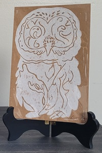

In my spare time I enjoy creating relief prints, I find the process to be incredibly meditative and it's helped me hone my personal style. All of the animals I have made prints of are beings that live at an animal sanctuary in my area. If you are interested in supporting this kind foundation please reach out to Speaking of Wildlife Animal Sanctuary.
